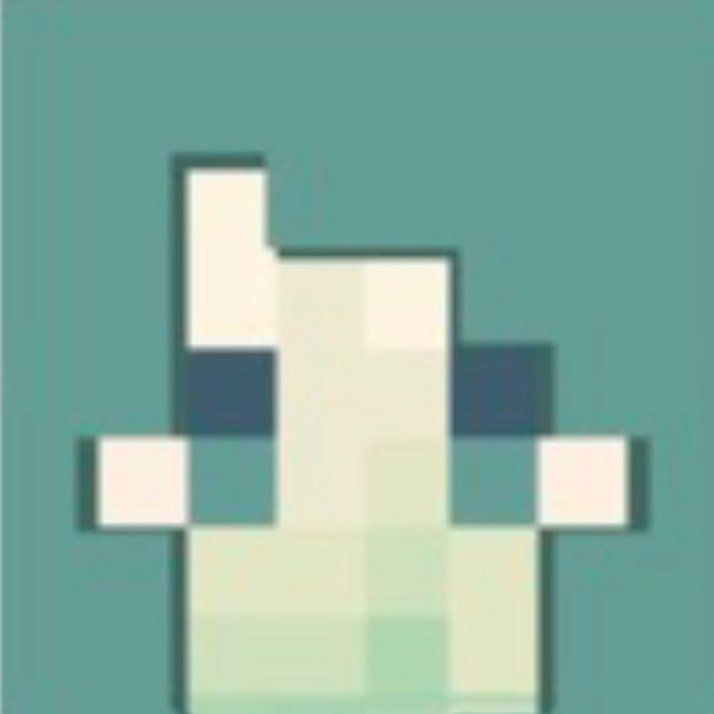
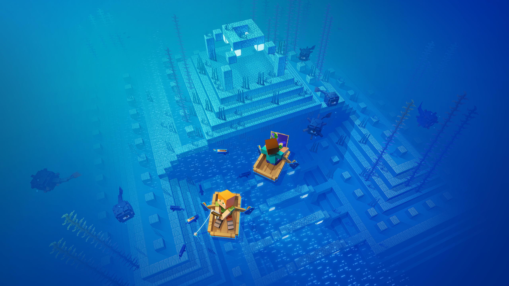
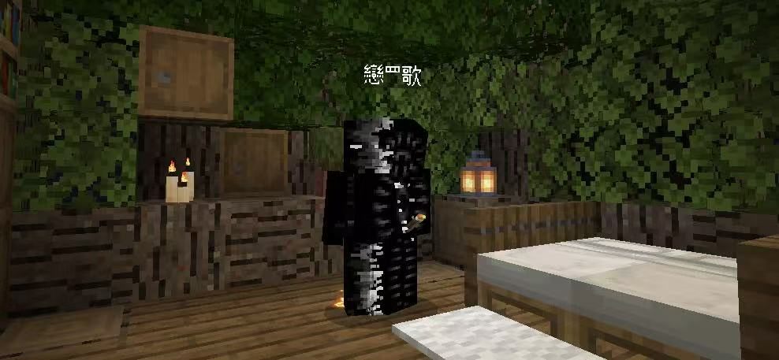
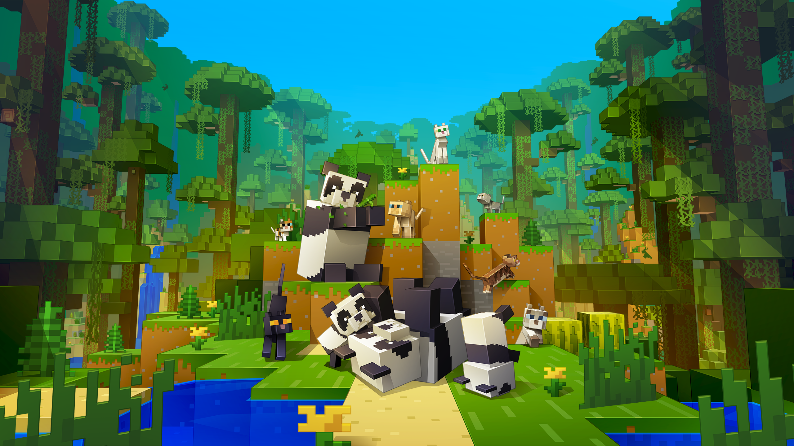
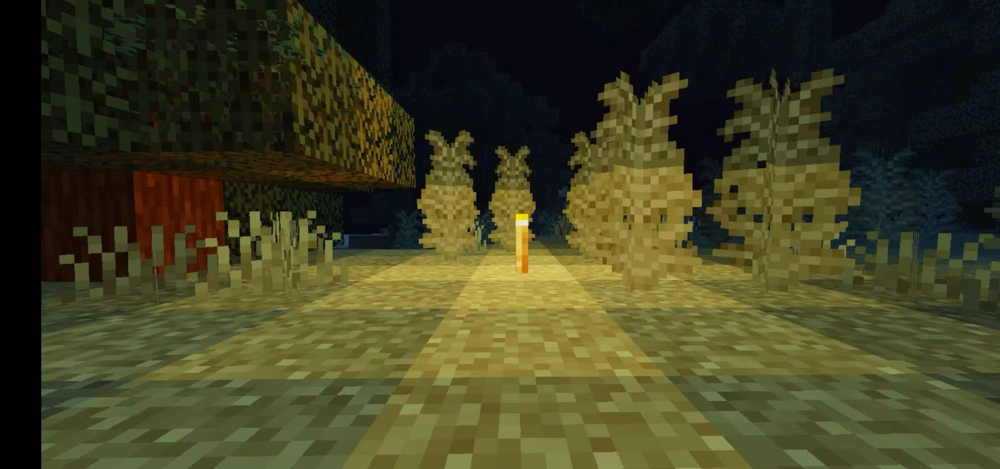

Minecraft is a sandbox 3D game. It was first built by Swedish programmer Markus "Notch" Persson in Java, and later developed and published by Mojang Studios. The public beta came out in 2009, and it officially launched on PC in November 2011.
You could call it an open world made of blocks, and that's true. But for me, it was the first "electronic connection" I ever had with my brother and my cousins.

Minecraft doesn't really have a plot. The developers drop a few pieces of lore here and there — the Ender Dragon, the Ocean Monument — but nobody ever forces you forward. No progress bar. No clear condition. No arrow telling you where to go.
That "we won't tell you what to do" thing is exactly what pulls me in. You can mine for an afternoon. You can spend a week building a castle. Blocks are everything in this world, and how you put them together is up to you.
The characters are just as simple. "Steve" is most people's first companion (and there are new members now). No backstory, no dialogue. But that's exactly why you end up putting yourself into him. Steve isn't someone else. Steve is you, sitting in front of the screen.
The first time I played Minecraft was on my cousin's computer. I was probably still in elementary school. My brother, my cousin, and my cousin sister were all crowded around one computer, taking turns mining and building. My cousin gave the orders. My cousin sister decorated. And I messed everything up — digging out blocks they'd just placed, or falling straight into lava. They never got mad. They just laughed and said, "We'll build it again."
That image stuck with me. Later, I played on my own, building in creative mode by myself. I started with a matchbox hut. Slowly, I worked up to a house with a garden, a countryside cottage, even a small town. Nobody was watching, but that warmth stayed.
The game never pushes me to "grow up." Everything is led by me. That freedom means more to me than any graphics or story ever could.

If I had to sum up Minecraft in a few colours, I'd pick: the green of grass, the blue of water, the brown of dirt, and the light blue of the sky.
Design-wise, this is a very restrained limited palette. Not many colours, low saturation, low brightness, and a lot of reuse. Green is the first impression — you spawn on grass, green blocks under your feet, green trees in the distance. It's saying, "You can start here." Blue runs through the whole game. The daytime sky is light blue. Water is deep blue. Diamonds are blue. In Minecraft, blue basically means exploration and possibility. Brown is the ground level — dirt and wood, the base of everything you build.
White and black get replaced by empty space and shadows. The shadow lines between blocks, the eyes of different mobs — just a tiny bit of dark colour doing all the work to create depth. Together, these colours send a simple message: comfort, freedom, no pressure. That's also why it relaxes me. It doesn't grab your eyes with high-saturation flashiness. It uses an almost quiet palette, and that's what makes you want to stay in it for hours.
The font is a core part of Minecraft's visual identity. The in-game interface uses a custom pixel bitmap font, where every letter is locked into a low-resolution grid — sharp edges, square characters, almost no curves. That restriction is the same idea as the game itself: everything is built from blocks. The font isn't decoration. It's part of the world.
This style is usually called "Minecraftia," and a fan named Andrew Tyler later turned it into a downloadable TrueType version. According to design resources like Made Good Designs, it's also widely used outside the game in fan art and merch. What makes it work is consistency — the logo, the menus, and the interface text all speak the same "language" as the blocky art style.
I'd recommend it to friends who are genuinely creative and actually enjoy working with other people. Minecraft isn't just a game. It's a tool that brings people closer. You can chat in it, build together, explore together, or just sit next to a virtual campfire and do nothing at all.
For me, it stopped being "my favourite game" a long time ago. It's another world of mine. Inside it are the traces my cousins left when they first taught me to play, the quiet hours I spent building alone, and a lot of possibilities for the future: in a world made of blocks, you can become anyone you want to be. Just like its name — my world.
